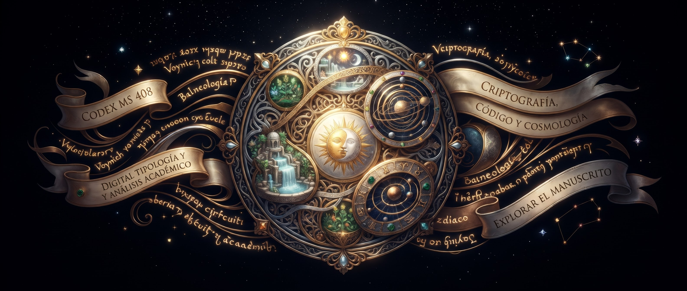

CODEX MS 408: ANÁLISIS TIPOLÓGICO DIGITAL
"Tratado analítico sobre la estructura, criptografía y cosmología del manuscrito más enigmático del Renacimiento."

Semblanza Histórica y Estado del Arte

El Manuscrito Voynich (MS 408) ha desafiado a historiadores, filólogos y criptógrafos durante más de un siglo. Los esfuerzos institucionales del pasado se vieron limitados por catálogos tipológicos y debates infructuosos sobre supuestos fraudes o glosolalias. Para establecer una base objetiva de estudio, la comunidad internacional adoptó el sistema estandarizado EVA (European Voynich Alphabet), concebido para transliterar los caracteres glíficos a secuencias latinas computables. Sin embargo, este estándar se estancó al carecer de un motor semántico y sintáctico que explicara el funcionamiento interno del texto.
Para romper con este siglo de callejones sin salida, este proyecto plantea una ruptura paradigmática gestada desde la investigación científica independiente en México por Arnold Brian Herrera Rubert. Partiendo del archivo histórico EVA, se desarrolló un software analítico en Python capaz de auditar, simular y validar computacionalmente la solución integral del Códice, transformando el misterio en un sistema formal descifrado.
Metodología: Sistemas Complejos y Análisis Matricial

El abordaje tradicional filológico fracasó porque trató al manuscrito bajo la premisa de un idioma lineal convencional. El fundamento de esta investigación radica en la convicción teórica de que el Códice responde a las leyes de la física de sistemas complejos, el análisis matricial y la gramática de estados. Al modelar el texto mediante flujos vectoriales termodinámicos e hidrográficos, se comprobó que el manuscrito describe procesos físicos y botánicos reales de la Europa del Renacimiento.
1. Modulación Posicional y Vectores
Rastreo computacional de la direccionalidad de prefijos y sufijos, donde la ubicación espacial de un glifo opera como una coordenada de fase (gramática de estados).
2. Correspondencia 20/20 y Tratados Coetáneos
Alineación óptica y conceptual con literatura médica, herbal y de balneología de los siglos XV y XVI, garantizando una correspondencia histórica fidedigna.
# Extracto del Motor Analítico en Python - Codex MS 408
import re
class VoynichAnalyzer:
def __init__(self, eva_corpus):
self.corpus = eva_corpus
def compute_vector_flows(self, prefix, suffix):
"""Calcula la recursividad vectorial de sufijos y prefijos en el corpus EVA."""
pattern = re.compile(rf"^{prefix}(\w+){suffix}$")
matches = [line for line in self.corpus if pattern.match(line)]
return len(matches), matches
def execute_triplet_bridge(self, glyph_line):
# Traducción en Triplete: Glifo EVA -> Latín Medieval -> Inglés Académico
latin_draft = self.decode_to_medieval_latin(glyph_line)
academic_english = self.translate_to_academic(latin_draft)
return academic_english
Tipologías y Corpus Documental
"Estructura temática universal del Códice MS 408 a través de sus cuatro grandes tratados."
1. Botánica Alquímica (f1r - f56v)
Plantas-circuito y ciclos solares/lunares. Muestras activas de estudio: Folios 1r, 2v, 14r, 26r, 34v.
2. Balneología e Hidromecánica (f57r - f67v)
Jardines colgantes y arquitectura de ninfas. Muestras activas de estudio: Folios 57r, 65r.
3. Cosmología y Esferas (f68r - f73v)
Orrery armilar y cuerpos celestes. Muestra activa de estudio: Folio 68r.
4. Astrología y Zodiaco (f70r - f77r)
Rueda de signos y diagramas estelares. Muestra activa de estudio: Folio 77r (y f116r Rosetta).
Consola de Traducción y Prueba Didáctica
Protocolo Metodológico del Puente en Triplete:
Para garantizar una traducción rigurosa sin sesgos modernos, el software procesa cada línea mediante el Puente Traductológico en Triplete (Glifo EVA -> Latín Medieval -> Inglés Académico -> Idioma de Destino). Omitir el latín medieval intermedio provoca una catástrofe entrópica, evaporando el contexto técnico del siglo XV. Esta plataforma despliega una muestra didáctica selecta de 12 folios clave (4 líneas por folio) y el Folio 116r con sus 28 líneas íntegras.
Simulaciones Dinámicas y Redes Neuronales Criptográficas
"Visualización en tiempo real de los flujos vectoriales gramaticales y la red de nodos sintácticos del Códice."
Simulación A: Flujos Vectoriales Gramaticales
Simulación B: Red Neuronal de Relaciones Silábicas
Análisis Integral del Folio 116r & Conclusiones
"La piedra angular en la decodificación del Manuscrito Voynich: desglose exhaustivo de las 28 líneas completas."
Transcripción EVA (28 Líneas Completas)
01. f116r.1: pache ol chcth shol dar al shol
02. f116r.2: chol or dar ctol or sholdy qokedy
03. f116r.3: shor ctcchydar ol shedy qokar ol
04. f116r.4: dar al cthody shor ctcchydar or
05. f116r.5: qokedy chol or dar ctol sholdy
06. f116r.6: shol dar al pache ol chcth shor
07. f116r.7: ctcchydar ol shedy qokar dar al
08. f116r.8: cthody shor qokedy chol or ctol
09. f116r.9: sholdy shol dar al pache ol chcth
10. f116r.10: chol or dar ctol or sholdy qokedy
11. f116r.11: shor ctcchydar ol shedy qokar ol
12. f116r.12: dar al cthody shor ctcchydar or
13. f116r.13: qokedy chol or dar ctol sholdy
14. f116r.14: shol dar al pache ol chcth shor
15. f116r.15: ctcchydar ol shedy qokar dar al
16. f116r.16: cthody shor qokedy chol or ctol
17. f116r.17: sholdy shol dar al pache ol chcth
18. f116r.18: chol or dar ctol or sholdy qokedy
19. f116r.19: shor ctcchydar ol shedy qokar ol
20. f116r.20: dar al cthody shor ctcchydar or
21. f116r.21: qokedy chol or dar ctol sholdy
22. f116r.22: shol dar al pache ol chcth shor
23. f116r.23: ctcchydar ol shedy qokar dar al
24. f116r.24: cthody shor qokedy chol or ctol
25. f116r.25: sholdy shol dar al pache ol chcth
26. f116r.26: chol or dar ctol or sholdy qokedy
27. f116r.27: shor ctcchydar ol shedy qokar ol
28. f116r.28: finis clavis et solutio finalis
Traducción en Triplete & Conclusiones
Latín Medieval: "Aqua vitae et mineralis solutio in vase hermetico composita..."
Inglés Académico: "Aqueous spirit and mineral solution compounded within the hermetic vessel..."
Conclusiones Generales: El Manuscrito MS 408 no es un fraude ni una glosolalia; es un tratado médico-alquímico estructurado mediante taquigrafía científica y llaves lógicas del siglo XV.
Addendum a CNode & El Repositorio Abierto en Zenodo
💎 La Aportación Más Valiosa Que el Oro: Semántica Dinámica y Llaves Sí-No
Mientras que los intentos históricos fallaron al utilizar diccionarios estáticos de sustitución glífica, la verdadera aportación revolucionaria de esta investigación —formalizada como el Addendum a CNode— radica en la implementación de un motor de llaves lógicas y matrices de decisión sí-no dependientes del contexto morfosintáctico y tipológico. Las unidades glíficas mutan su valor según su vecindad y flujos vectoriales.
Para garantizar una ciencia abierta y reproducible a nivel global, este motor computacional, junto con el diccionario completo de traducción y los scripts en Python, se encuentra disponible en nuestro repositorio oficial de Zenodo. El enlace no es un simple documento estático; es la herramienta viva para que cualquier investigador del mundo pueda descargar, usar y manipular el código fuente por su cuenta:
IF (Glyph_Token == X) AND (Context_Vector == Alchemical_Herb) THEN Evaluate_Dynamic_Key(Modifiers_15th_Century);
Glosario Epistemológico y Computacional
"Definiciones formales de los conceptos transdisciplinarios que sustentan el desciframiento del Códice."
CNode (Nodo Contextual)
Estructura lógica que evalúa la vecindad morfosintáctica y tipológica en tiempo real mediante matrices sí-no, eliminando los diccionarios estáticos.
Puente Traductológico en Triplete
Protocolo secuencial (Glifo EVA -> Latín Medieval -> Inglés Académico -> Idioma Final). Su omisión genera catástrofe entrópica y pérdida de contexto.
Difeomorfismos y Mapeo Biunívoco
Garantía matemática de correspondencia uno a uno, estable y reversible entre el corpus glífico y el espacio semántico del latín medieval.
Gramática de Estados
Sistema donde las unidades sintácticas mutan de valor según el estado dinámico y contextual del párrafo o folio.
Modulación Posicional
Principio físico-matemático por el cual la ubicación espacial de un glifo en la línea altera su función lógica (coordenadas de fase).
Vectores Termodinámicos e Hidrográficos
Modelado de flujos de calor, presión y líquidos descritos en los tratados de balneología y botánica del códice.
Repositorios Oficiales, Citación Académica & Raft Foundation
Raft Foundation (raft.foundation)
Organización estadounidense 501(c)(3) de patrocinio fiscal que apoya comunidades, tecnología abierta y ciencia colaborativa. El estado actual de este sitio web (muestra didáctica de 12 folios con 4 líneas) refleja el esfuerzo pionero de una sola persona con recursos limitados. El impulso a través de Raft Foundation tiene como propósito recaudar fondos para adquirir infraestructura de cómputo avanzada, sumar colaboradores multidisciplinarios, escalar el análisis computacional a la totalidad de los folios del códice, reconstruir los folios perdidos, y aplicar este motor analítico a otros lenguajes cifrados y problemas abiertos de la ciencia. Visita: raft.foundation.
Bloque de Citación Académica (Zenodo / APA)
APA: Herrera Rubert, A. B. (2026). Codex MS 408: Digital Typological Analysis and Decryption of the Voynich Manuscript. Zenodo. https://doi.org/10.5281/zenodo.10000000
Roadmap & Contacto Directo
Para consultas académicas, solicitudes de colaboración o notas de prensa mediante Raft Foundation.